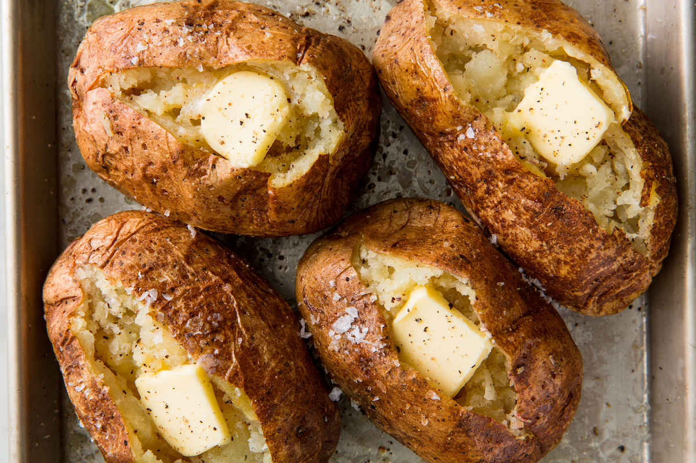

BAKED POTATOES

DESCRIPTION
A baked potato, known in some parts of the United Kingdom as a jacket potato, is a preparation of potato. The ideal baked potato has a fluffy interior and a crispy skin. It may be served with fillings, toppings or condiments such as butter, cheese, sour cream, gravy, baked beans, and even ground meat or corned beef.
INGREDIENTS
- Potatoes
- A nice hot oven
- Butter, Corn, Cheese
- Barbeque Sauce (OPTIONAL)
- While the oven preheats, prep the potatoes. Scrub the potatoes well and pat them dry with a kitchen towel. Then, poke the potatoes with a fork a few times to create small holes across their surfaces.
- Next, season the potatoes. Place them on the baking sheet and rub them all over with olive oil. Sprinkle them liberally with sea or kosher salt, and transfer them to the hot oven to bake.
- Bake for 45 to 60 minutes, until the skins are crisp and puffy and you can easily pierce the potatoes with a fork. Use oven mitts to remove the hot baking sheet from the oven